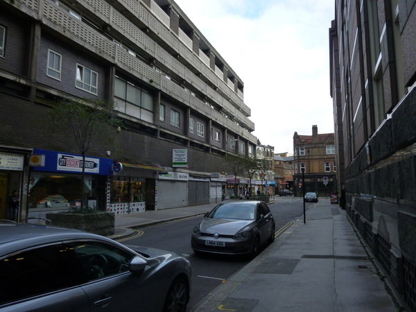
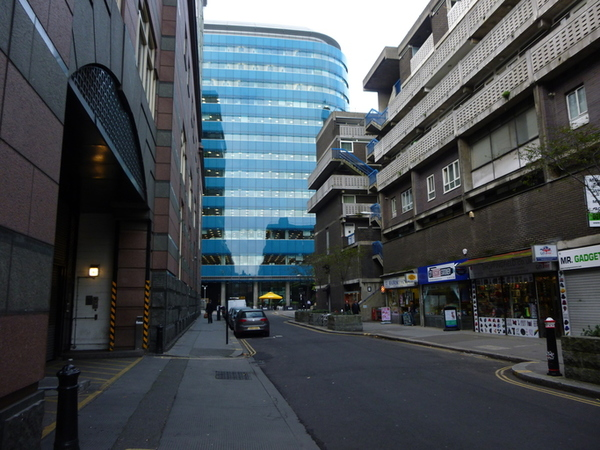
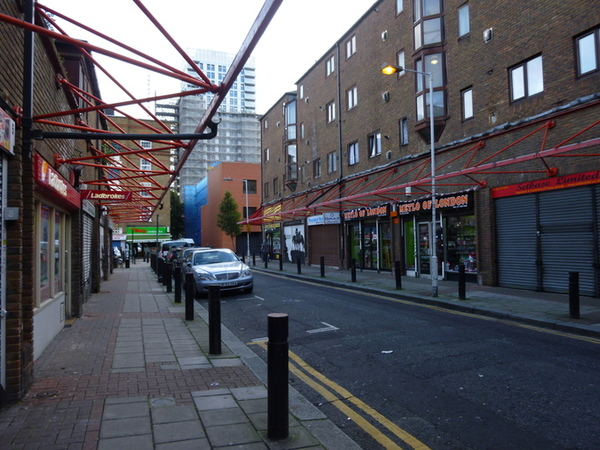
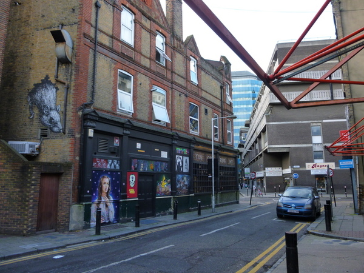
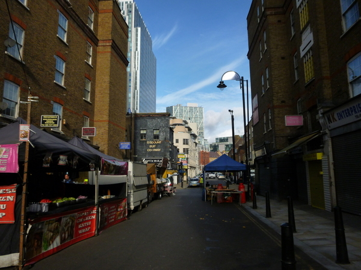
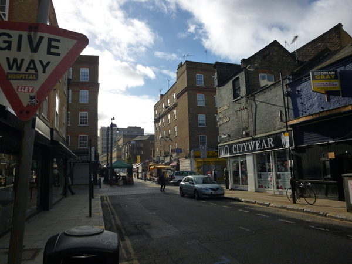
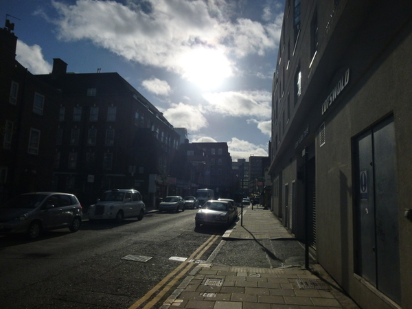
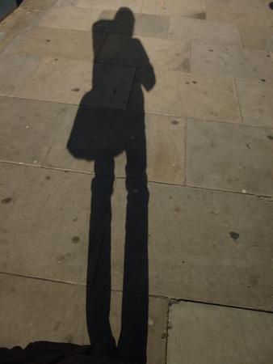
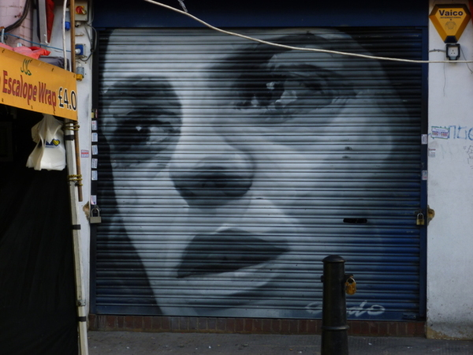
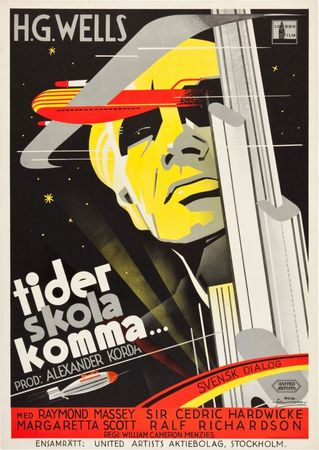

суровое утро понедельника
Занимался сероватый рассвет, и грохот долбящих бетон перфораторов нарастал. В целях звукоизоляции окно было наглухо задраено, поэтому дышать было решительно нечем. Нашаривая жодинские меховые тапки, я подумала, что долго мы не продержимся со спаньём.
Вообще, с просыпанием у меня проблем нет: просыпаюсь я с чувством дичайшего голода, и одна мысль о небольшой горе яблок и бананов запросто вытаскивает меня из кровати. Бывают, конечно, и исключения: если съесть на ночь кастрюлю пересоленных кабаков, то утром трудновато разлепить опухшее от еды лицо. От пересоленных кабаков, впрочем, и не такое бывает: один раз мне приснилось, что папа написал книжку про командную строку, а какие-то недозрелые линуксоиды плохо высказались про неё. Проснувшись, я минут пять в холодном поту не могла сообразить, было такое или нет.
Между тем утро было солнечным — это чувствовалось по ребристым бликам на стене, отражённым от небоскрёба напротив. Я человек, глубоко зависящий от всякой там погоды, и солнечность для меня — не баран чихнул.
* * *
Потом мы прошлись вместе до метра: оттуда СергейАнатольич уезжает на работу, а я — куда черти понесут. То бишь, в хорошем случае — домой к компу, а в плохом — абы-куда ломать остаток дня.
По дороге назад я каждый раз жалею, что не взяла с собой фотик (а по дороге туда брать его мне кажется глуповатым). Но на этот раз, воспользовавшись солнечностью, я его всё-таки взяла.
Так вот выглядит дорога от метро в один из радостных дней:

Это короткая тупиковая улица, довольно серая по местным меркам. Я возвращалась из её тупикового конца, и в конце развернулсь и сделала фотку назад. На ней виден синий полосатый дом, мимо которого мы ходим почти каждый день, но недавно СергейАнатольич его заметил и удивился. ;D

Иду дальше. Подобными костылями на домах тут никого не удивишь. :)

Синий дом скрывается за поворотом, а тем временем камера выхватила несколько картинок: мышь (явно рукой того же автора, что и ёж), красавица на звёздном небе и всякое. В углу дома с картинками — чёрная пивнуха, пользующаяся тут большим спросом. Когда я иду встречать СергейАнатольича вечером в четверг, на этом углу собирается толпа весёлых, подвыпивших мужиков в пиджаках — зрелище, надо сказать, радостное.

Дальше. Вот уже показался кусок гатэля: не самый дальний, с треугольниками, а тот, что поближе и более высокий. Физически он расположен в районе рыжих кирпичных домов, виднеющихся над синей крышей палатки — просто высокий.

Give way! Такое тут часто на столбах написано.

Мне уже мало осталось идти. Сфоткаю-ка я солнце.

И асфальт.

А вот оно, главное сокровище, которое я оставила напоследок и ради которого можно выкинуть все остальные фотки:

Красивых рисунков тут много, но этот пробирает душу не хуже моего любимого “tider skola komma”.

Кстати, раз уж я вспомнила про “tider skola komma”, то буду его, наверное, в каждый пост вставлять. :D Потому что я именно так вижу жизнь — так же, как это жёлтое лицо. ;)
comments powered by Disqus